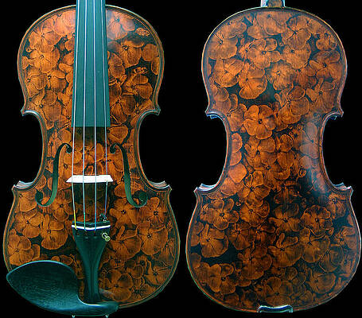
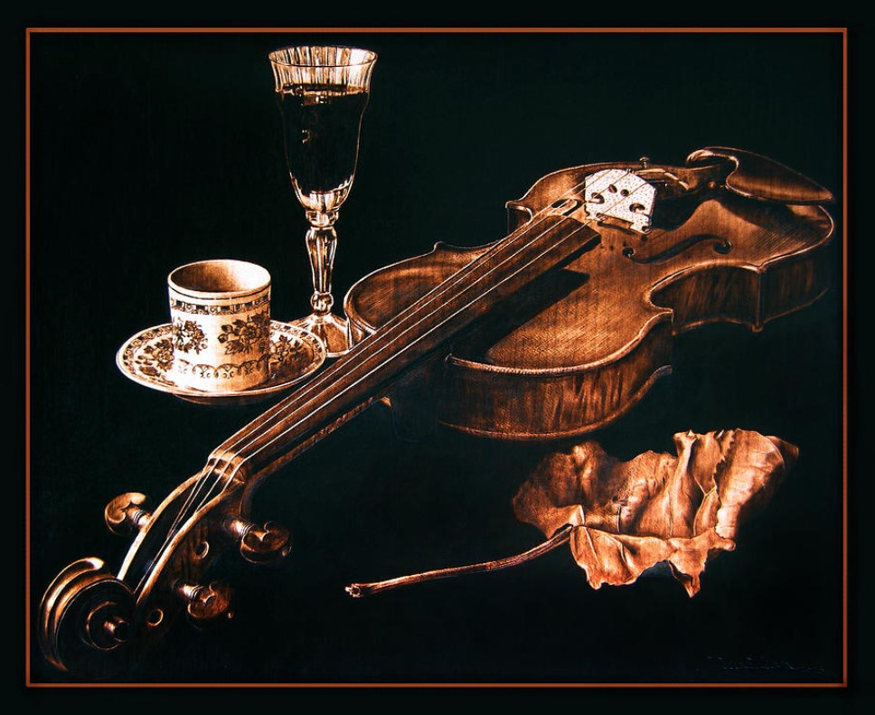
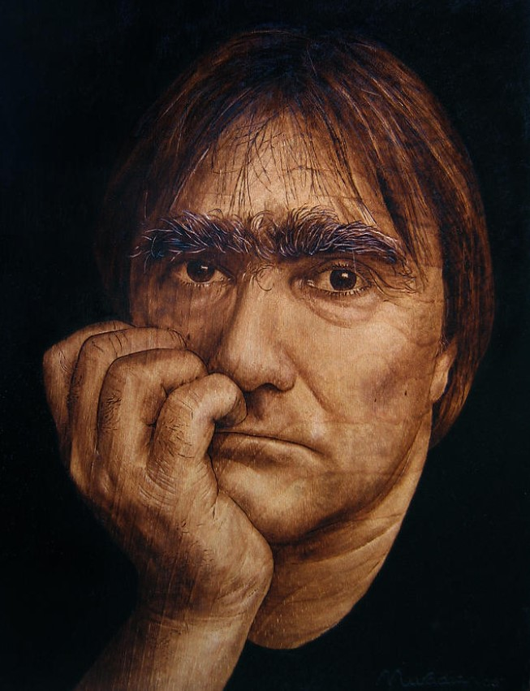

You will find my profile here:
(scroll down for my school
homework project)
-------------------------------------------------------------------------------------------
Dino Muradian (Dumitru Muradian) was born in Romania to a half-Armenian, half-Hungarian father and a Romanian mother. He was introduced to pyrography at the age of seven by his grandfather, and it became his main hobby as his life took many interesting twists and turns. He graduated in 1977 from the Romanian Aviation Academy in Bobocu, Romania, and worked as a commercial airplane pilot until the summer of 1983, when Dino defected from regime of communist leader Nicolae Ceausescu on a small Antonov An-2 crop-duster. He spent five months in a refugee camp in Austria, and arrived in the U.S. as a political refugee in early 1984.
He now lives in Hawaii and creates different artworks. As he is a modern artist, so it is hard to attribute him to historical art period. However, from his style he could be attributed to Pre-Raphaelite Brotherhood. You can attribute him to them, because they decorated stuff, they drawled realistically. Moreover, both Dino’s and the Pre-Raphaelite Brotherhood’s paintings were religious at the start.
The name Pre-Raphaelite Brotherhood referred to the groups' opposition to the Royal Academy's promotion of the Renaissance master Raphael (early Italian Renaissance and Classical art). In contrast, the Pre-Raphaelites took inspiration from an earlier (pre-Raphaelite - before the artist Raphael) period. They believed painters before the Renaissance provided a model for depicting nature and the human body realistically, rather than idealistically. They believed in an art of serious subjects treated with maximum realism. Their principal themes were initially religious.
The Arts and Crafts movement had a profound effect on the decorative arts. Artists were producing designs and decoration for furniture and tapestries. Also, they refuted the use of chemical dyes and instead reintroduced organic methods, which used natural materials.
A movement that began in the late 19th century still relevant today, and its cool designs continue to inspire interiors. The Pre-Raphaelites loved ornament, as long as their patterns were not suggestive of anything elaborate or unnecessarily decorated. This ‘flat’, simplified style of the Arts and Crafts continues into some of today’s naturalistic wallpapers and fabrics, rustic and functional furniture and stripped-down interiors – all of which have their roots in this style.
Some interesting facts about him are:
🏢 Dino was sentenced to 25 years in prison, in absentia.
🎸 Jackson-Charvel. B.B. King had one of his pyrographed Gibson guitars; James Hetfield of Metallica has two.
🎻 Dino estimates that he has pyrographed around 100 ukuleles so far, each a unique creation, and probably another hundred other musical instruments.
|  |  |  |
| Viola 2006 | Play Me 2008 | Self Portrait 2008 |
-------------------------------------------------------------------------------------------
Thanks to:
for the information